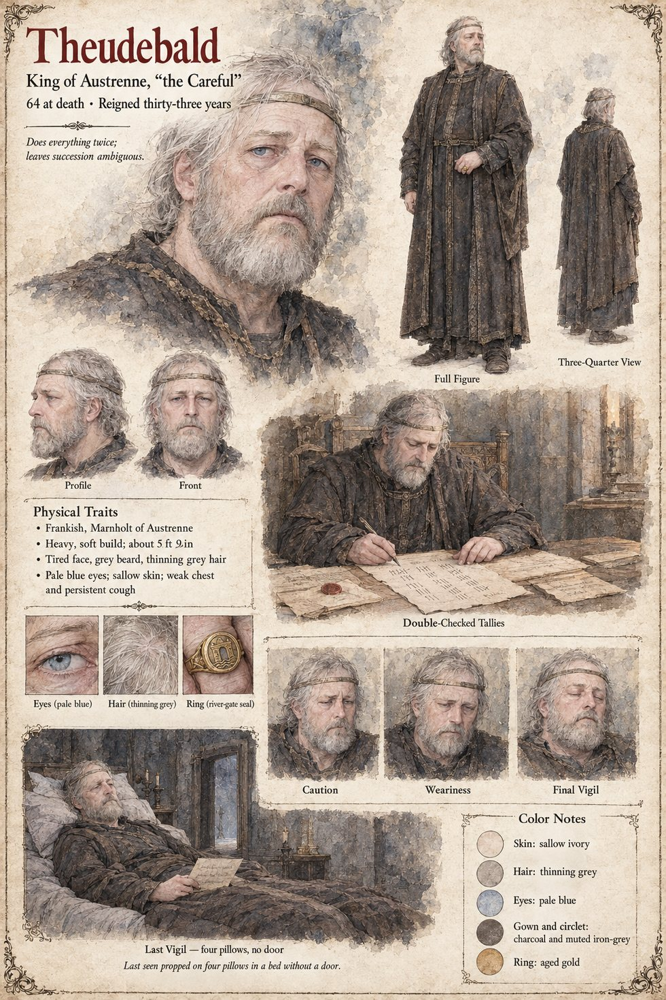

Theudebald
King of Austrenne, called the Careful · widower, father of Adalgund · 63 in the winter of the writ, 64 at his death
A heavy, soft-voiced, grey-bearded man with a weak chest and a cough that comes up out of him like a man climbing a stair, who rules from a small room behind the great hall of Marnholt, the one with the single window over the river. He does everything twice, once for what it says and once for what it leaves out, and it is this habit, more than any other, that has earned him the title of the Careful and given a nation not invaded in sixty years the unshakable conviction that it is well governed. When he reads the figure eighty-nine he looks at it for the length of one candle, drafts the writ himself and has it copied three times; on the twelfth of Mavren it is proclaimed that no sword wrought at the Low Forge is to pass to any lord, captain or company without the royal licence, granted in advance to his daughter Adalgund, Countess of Eschwin. The treasury pays a hundred and forty marks a blade for hers under the heading Repairs to the Eschwin Bridge. In the second month of the thirty-third year he does the one thing of his reign that he does only once: he sends for the smith. He asks Ansbert whether a sword could be made that would fail, hears that a blade would break for whoever was holding it, says that it was never the oath that was being judged but the iron, and gives him a ring from his own finger, a plain gold one with the seal of the river-gate.
He has been a widower for thirty-six years and has named no son; in the last month of the thirty-second year he names his daughter heir, using a masculine pronoun that in the Latin of the old law stands for either. On the twenty-first of Brayen he sends for his brother the Duke of Tarnwald, who has not entered his palace in six years and stops at the door of the room and cannot come in; the King has foreseen it, and a carpenter takes the door off its hinges and stands it in the corridor, where it remains eleven days. He makes the brothers swear peace on the ninetieth blade, which lies on the coverlet between them, and tells them that the sword cannot tell them whether they lie. He speaks to his daughter alone, with a boy of eleven holding a basin as the only witness. It is reported that he asked whether she wanted it, and that she said she did not; the sentence of the interview that more than one person repeats is I thought of it three times. He dies on the night of the twenty-second, a little before the hour of the Hare, in the great bed on four pillows, with the window open on the river and no door, with his hand in his daughter's and the writ under the pillow. At the Three Sheaves a boatman says he died of arithmetic and the widow Waldrada says a king who counts twice dies once.
The manuscript's reign is not consistent: the first chapter has him ruling thirty-one years, and the chapter of the audience says thirty-three, as does the sheet. The sheet's heavy soft build of about 5 ft 9 in, tired face, grey beard, thinning grey hair, pale blue eyes, sallow skin, aged-gold ring and circlet are its own, as are its panels Double-Checked Tallies and Last Vigil, whose line has him last seen propped on four pillows in a bed without a door.
“I thought of it three times.”